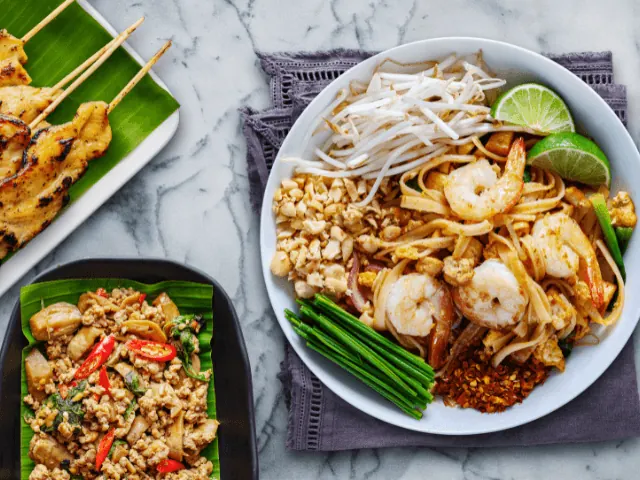
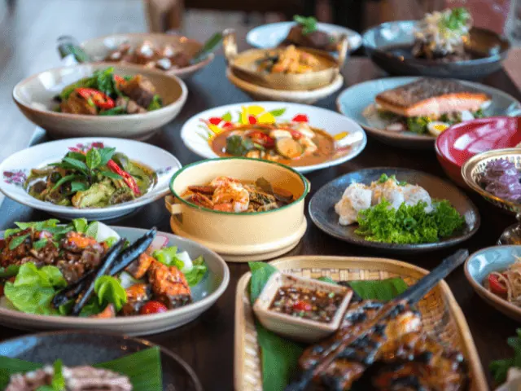
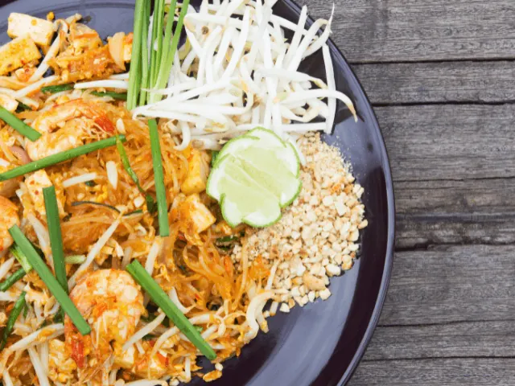

Thais eten in Nijmegen: de beste Thaise restaurants
Gepubliceerd op 14 februari 2023, bijgewerkt op 25 november 2026
Onderdeel van de gids Restaurants in Nijmegen

Zin in pad thai, een romige groene curry of een pittige tom kha? Een Thais restaurant vind je in Nijmegen in het centrum, in Oost en bij het station. Hier lees je waar je aan tafel gaat, waar je Thais laat bezorgen en wat elke zaak bijzonder maakt.
Thaise restaurants in Nijmegen
Siam Thai Palace: Thais restaurant bij het Valkhof
Aan het Kelfkensbos, tegenover het Valkhofpark, kookt Siam Thai Palace Thaise gerechten op traditionele wijze, met verse ingrediënten. Je komt er voor het diner: het restaurant is van dinsdag tot en met zondag open vanaf half vijf, de keuken tot half tien. Op maandag is het dicht. Bij mooi weer zit je buiten, het restaurant is rolstoeltoegankelijk en ook met kinderen ben je welkom. Reserveren kan online of telefonisch, en je kunt ook afhalen of laten bezorgen.

Tu Thai Food: klein Thais restaurant in Nijmegen-Oost
In de Van den Havestraat in Nijmegen-Oost kookt Tu Thai Food authentieke Thaise gerechten. De meeste mensen bestellen online en laten het eten bezorgen of halen het op, maar je kunt er ook eten, in een klein restaurant met veertien plekken. Wil je aan tafel, bel dan even om te reserveren. Tu Thai Food is open van dinsdag tot en met zondag, van vier tot negen uur.
M.I.A. Made in Asia: Thais en meer bij het station
Op het Stationsplein, naast Nijmegen Centraal, bestel je bij M.I.A. Made in Asia kleine gerechten om te delen. Op de kaart staan Thaise, Chinese en Vietnamese gerechten, van noedels en summer rolls tot dim sum, met een apart blok vegetarische en vegan hapjes.
Thais laten bezorgen of afhalen in Nijmegen
- BKK Thai aan de Tweede Walstraat: kipsaté met huisgemaakte pindasaus, phad thai, tom kha met kokos, curry's en eend, met een aparte vegetarische hoek. De keuken is elke dag open vanaf het eind van de middag.
- Mr. Thai Streetfood aan Plein 1944: sinds 2024 Thaise streetfood met een fusiontwist, zoals phad thai met kip, pad krapauw en groene curry. Om mee te nemen of te laten bezorgen.
- Siam Thai Palace en Tu Thai Food bezorgen ook.

Meer Aziatisch eten in Nijmegen
Liever sushi, Chinees of Indonesisch? Lees dan sushi in Nijmegen, Chinees in Nijmegen of Aziatisch eten in Nijmegen. Alle keukens bij elkaar vind je in onze gids restaurants in Nijmegen.

Veelgestelde vragen
Wat is het beste Thaise restaurant in Nijmegen?
Voor een avond uit eten is Siam Thai Palace aan het Kelfkensbos, tegenover het Valkhofpark, het bekendste Thaise restaurant van Nijmegen. In Nijmegen-Oost zit het kleine Tu Thai Food aan de Van den Havestraat.
Waar kun je Thais laten bezorgen in Nijmegen?
Bij BKK Thai aan de Tweede Walstraat, Mr. Thai Streetfood aan Plein 1944, Tu Thai Food en Siam Thai Palace. Ze bezorgen of je haalt het eten zelf op.
Kun je vegetarisch Thais eten in Nijmegen?
Ja. BKK Thai heeft een aparte vegetarische hoek op de kaart en M.I.A. Made in Asia bij het station heeft een apart blok met vegetarische en vegan gerechten.
Is Siam Thai Palace op maandag open?
Nee. Siam Thai Palace is van dinsdag tot en met zondag open vanaf half vijf 's middags; de keuken sluit om half tien.